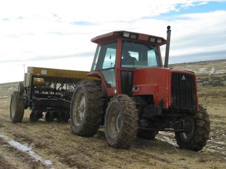

<div class="row">
  <div class="col-md-6 pull-left">
    
  </div>
  <div class="col-md-5 words">
    <h4>Reclamation Seeding</h4>
    <p>We reclaim by: </p>
    <ul style="list-style-type:disc;">
      <li>Chiseling to aerate the ground</li>
      <li>Rolling if desired</li>
      <li>Planting according to local boime specifications</li>
      <li>Mulching, if needed, to keep seeds in place and collect moisture to support their growth</li>
    </ul>  
  </div>
</div>